Project Inventory
Please find the list of my current open-source projects below. Projects completed within some institutions are proprietary and cannot be posted here.
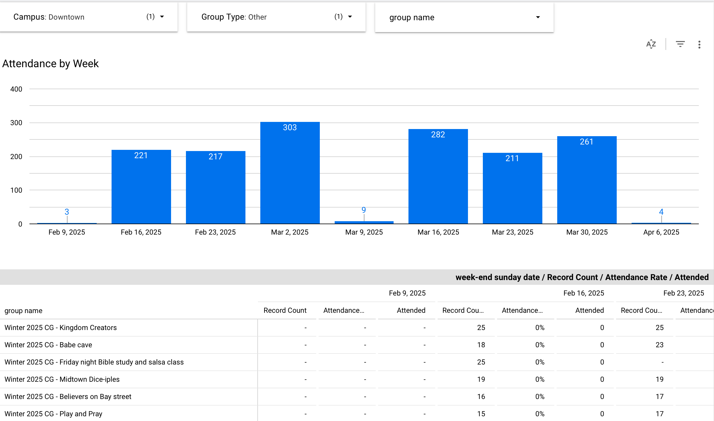
Project Orchesta
End-to-end automation using the Planning Centre and Google API, with Google Sheets integration, and scheduled exports for reporting on a custom-built Ubuntu server via Cronjob.
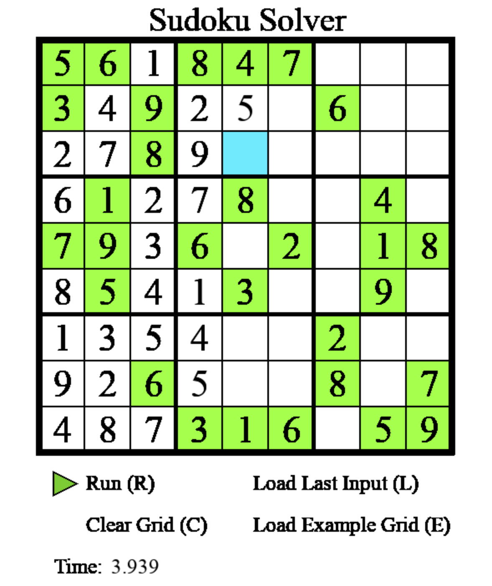
Sudoku Solver
Python solver using backtracking with user interface engineered in PyGame.
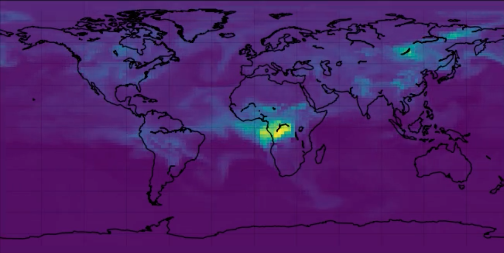
Atmospheric Machine Learning Research: New Regridding Techniques
Research conducted on the Harvard GEOS-Chem climate model involving a divergence-governed regridding scheme to improve vertical drafts in the atmospheric tracer machine learning model (regridding code is proprietary).
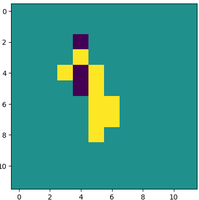
Feature Importance Selection using Ising Model Convergence on a Random Lattice
Implementation of a feature selection algorithm using the Ising model to compute feature weights using convergence testing and hyperparameter tuning on a random 2D lattice.
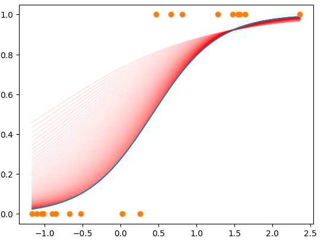
Simple GLM Demos
Hard-coded generalized linear model demos written in Jupyter. Library includes linear and logistics regression algorithms, manual gradient descent using regularization, and their comparisons to Sci-Kit Learn outputs.
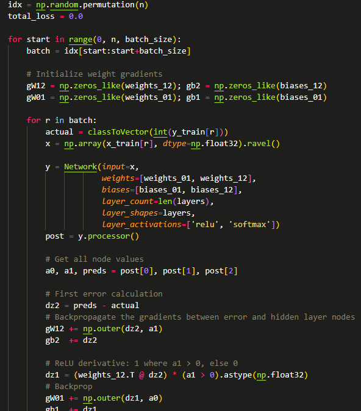
Scratch Convolutional Neural Network
Convolutional neural network implemented from scratch in Python using the MNIST dataset and 1 hidden layer. Usage of Kaiming, Xavier initialization techniques and manual backpropagation. 95% accuracy.
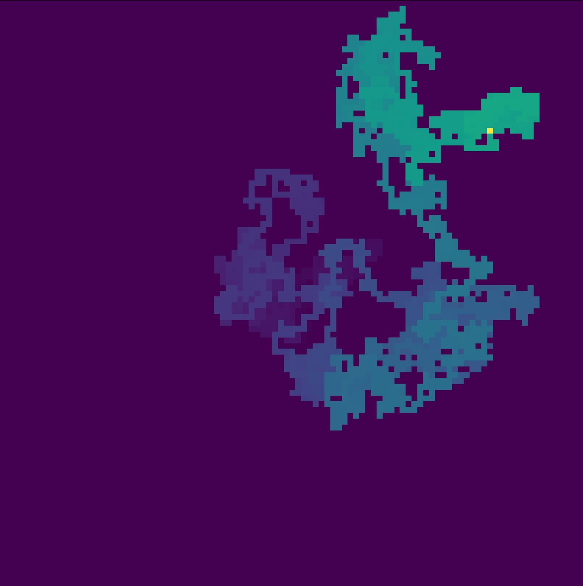
Brownian Motion Simulation
Stochastic simulation of Brownian motion and physics modeling based on discrete random walks.
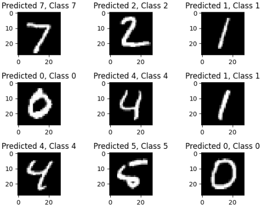
MNIST Digit Classifier
Simple Python implementation of a convolutional neural network for MNIST digit classification using ReLU activation and softmax regression.
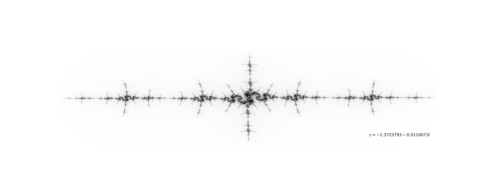
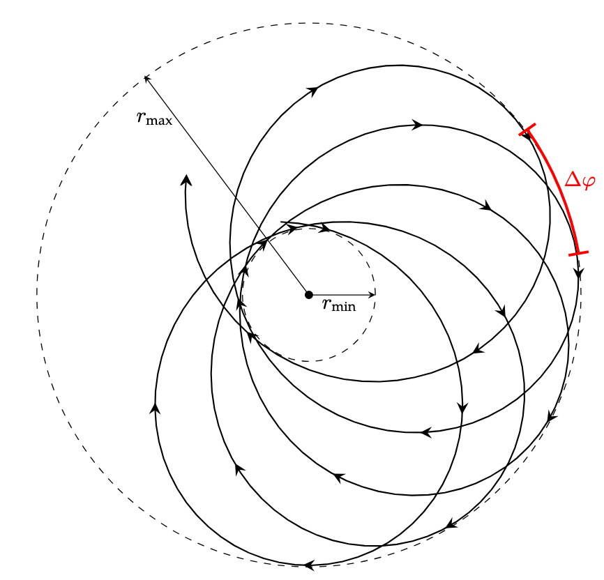
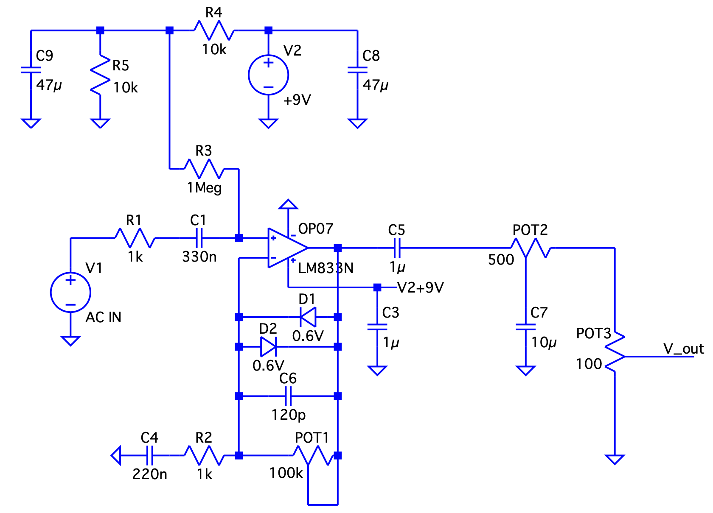
Custom Analog Distortion Circuit
Analog electronics design and analysis for a distortion audio circuit.

Symbolic General Relativity Tensor Calculator
Mathematical symbolic analysis of tensor calculations for differential geometry in general relativity.
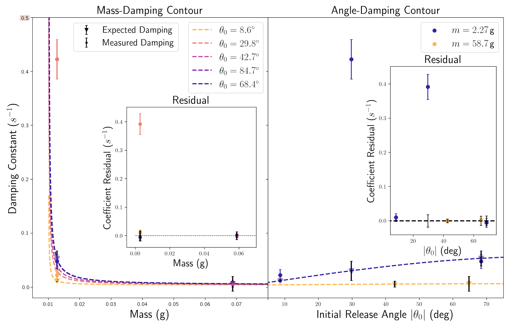
Advanced Pendulum Dynamics
Advanced nonlinear analysis of a homemade pendulum by computing its equations of motion and the drag coefficient of a marble.